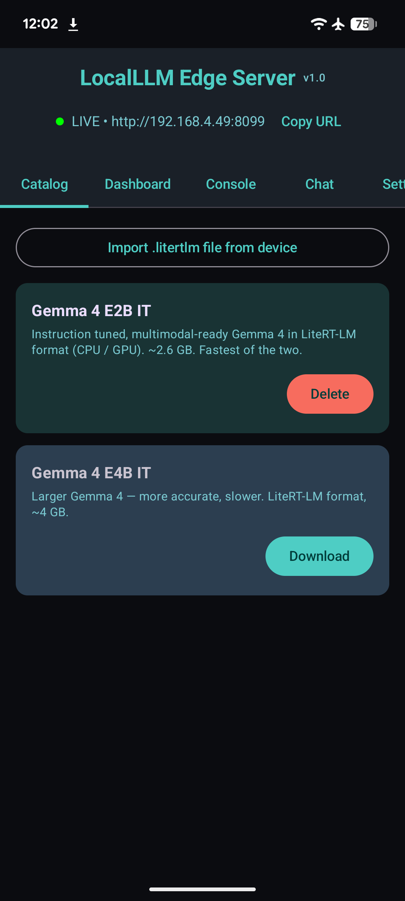

Getting started¶
This page gets you from a fresh checkout to a working curl
round-trip against the on-device server.
Requirements¶
| Android device | Phone or tablet on Android 10+ (API 29). Tested on Pixel-class hardware; should run on any device with ~6 GB free storage (model + kernel cache). |
| JDK | 17 (AGP 8.7 requires it; sourceCompatibility is 11). Temurin works well. |
| Android SDK | API 35 installed. local.properties should contain sdk.dir=/path/to/Android/sdk. |
| Disk | ~3 GB free per model. The Gemma 4 E2B .litertlm is 2.6 GB; XNNPACK kernel cache adds ~800 MB after the first inference. |
| Network | First-time model download is ~2.6 GB from HuggingFace. Subsequent runs are fully offline. |
Build the app¶
git clone https://github.com/mlnomadpy/localllm.git
cd localllm
echo "sdk.dir=$HOME/Library/Android/sdk" > local.properties # adjust path
./gradlew :app:assembleDebug
Output APK: app/build/outputs/apk/debug/app-debug.apk.
Grab app-debug.apk from the latest
GitHub Release.
It's signed with Android's debug key — fine for sideloading, not
for the Play Store.
Install on a device¶
adb install -r app/build/outputs/apk/debug/app-debug.apk
adb shell am start -n com.localllm.app/.MainActivity
On Android 13+ the app asks for POST_NOTIFICATIONS on first launch
— grant it, otherwise the foreground service notification (and the
Stop action on it) won't show.
Download a model¶
Open the Catalog tab and tap Download on either Gemma 4 E2B IT (2.6 GB, faster) or Gemma 4 E4B IT (~4 GB, more accurate).

The download runs via Android's DownloadManager and is verified
against the catalog's SHA-256 once it finishes. A mismatched download
is deleted automatically and you'll see a toast.
For custom models (any .litertlm bundle, including the Qualcomm-NPU
variants in the same HuggingFace repo), use Settings → Custom model
URLs, one URL per line, ending in .litertlm. They show up in the
Catalog tab and bypass SHA-256 verification (bring-your-own
integrity).
Talk to the server¶
Once a model is on disk and the foreground service is running (the header bar shows LIVE • http://<ip>:<port>), point a client at it.
from openai import OpenAI
client = OpenAI(
base_url="http://localhost:8099/v1",
api_key="not-needed" # set Settings → API key on the device if you want auth
)
resp = client.chat.completions.create(
model="gemma-4-e2b",
messages=[{"role": "user", "content": "Hi."}],
stream=False,
)
print(resp.choices[0].message.content)
Enable Settings → Allow CORS on the device first.
Reaching the server from another device¶
By default the server binds to 127.0.0.1 — only the phone itself
can reach it. Two ways to widen that:
adb forward for a USB-connected dev machine:
LAN binding if you want any device on the same Wi-Fi to use it:
- Settings → Bind to LAN → enable.
- Stop / Start the server (toggle in Settings) to rebind.
- The header bar now shows
http://<phone-ip>:<port>. Hit that URL from any device on the same Wi-Fi.
Don't expose this to the internet
The server has no per-IP rate limiting and the bearer-token auth is a single shared secret. Fine for trusted LANs; not fine for public networks. If you must, run a real reverse proxy in front and don't rely on the app's CORS toggle for cross-origin policy.
Verify it's actually working¶
{
"status": "ok",
"service": "localllm-android",
"version": "1.0",
"queue_depth": 0,
"engines_loaded": 1,
"engines": [
{
"key": "gemma-4-e2b_model_AUTO",
"backend": "CPU"
}
]
}
engines[].backend is the real backend the engine ended up on. If
you've set AUTO and you see "CPU" here, GPU init failed silently on
this device (most often: libvndksupport.so missing). The Console tab
has the GPU failure reason logged.
Next up: the full HTTP API surface.